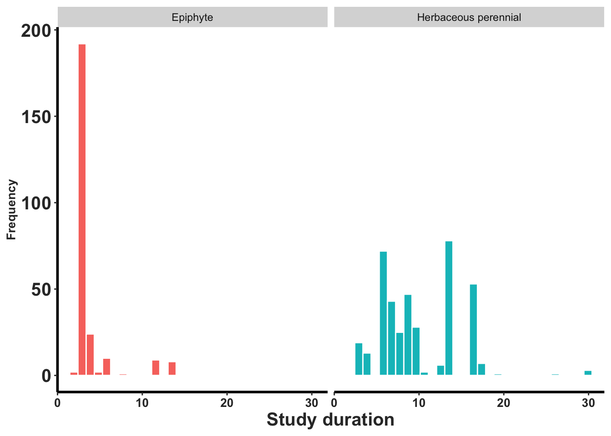
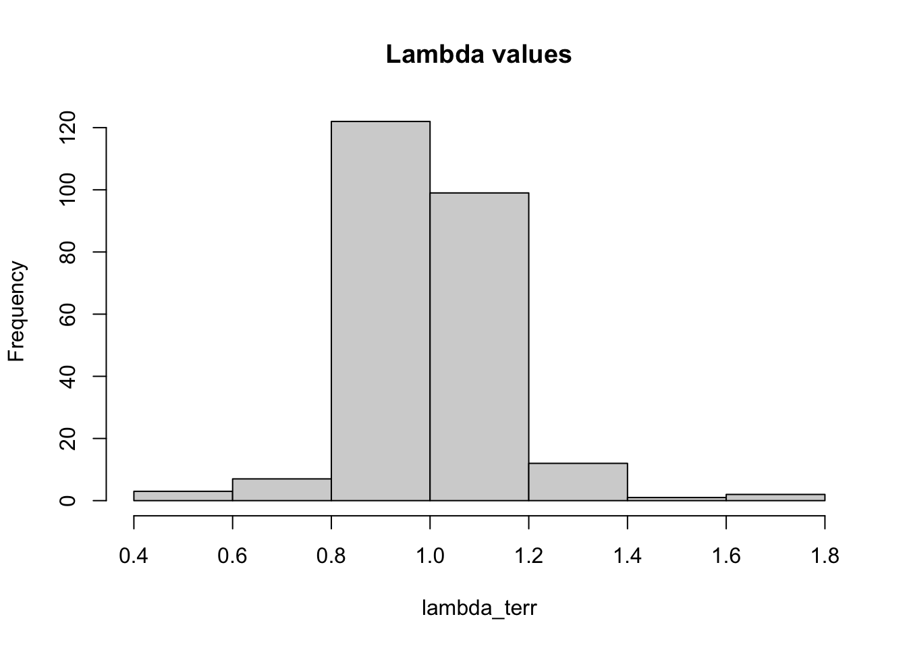
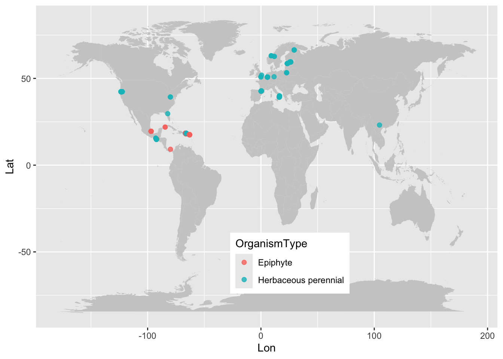
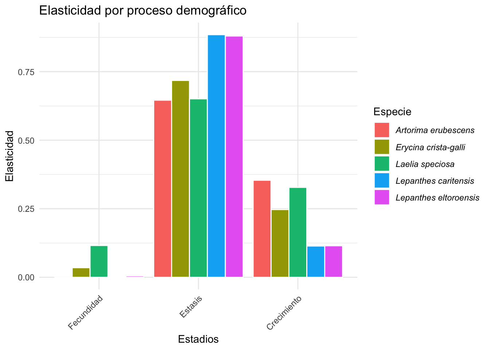

Capítulo 18 Compadre_Orchid PPM y su uso
Raymond y Roberto
Activar los siguiente paquetes
library(Rcompadre) # Paquete para trabajar con la base de datos de COMPADRE y COMADRE
library(tidyverse)
library(gt)
library(kableExtra)18.0.1 COMPADRE
Este capítulo es una introducción a COMPADRE y algunas de la funciones en los paquetes de Rcompadre y Rage. La información aqui no sustituye la información proviste <https://compadre-db.org/> y los tutoriales que se encuentran en la siguiente pagina <https://compadre-db.org/Education>
18.0.2 Acceso a los datos de COMPADRE.
Hay dos métodos de tener acceso a los datos de COMPADRE (datos de dinamica poblacional de plantas) y COMADRE (datos de dinamica poblacional de animales). Los datos se pueden acesar directamente en la pagina de web o bajar el archivo de datos al siguiente enlace <https://compadre-db.org/Data/Compadre> seleccionando la pestaña de Download COMPADRE.
18.1 Para tener acceso a los datos cuando no esta conectado al internet es necesario bajar el archivo y instalar en su proyecto de RStudio. Al momento de construir el libro la versión meas reciente de COMPADRE es la versión 6.23.5.5.0 (May_06_2023) y se puede bajar al siguiente enlace <<https://compadre-db.org/Data/Compadre/COMPADRE_v.
- Usando la función cdb_fetch() se puede bajar los datos directamente de la pagina de web de COMPADRE.
compadre <- cdb_fetch("compadre") # Usar este código para bajar los datos del repositorio de COMPADRE. ## This is COMPADRE version 6.23.5.0 (release date May_06_2023)
## See user agreement at https://compadre-db.org/Help/UserAgreement
## See how to cite with `citation(Rcompadre)`# USAR el código siguiente si tiene los datos bajado a su computadora.
# load(dirección al archivo a su proyecto de RStudio) si tiene el repositorio en su computadora18.1.0.1 Renombrar la base datos algo sencillo
- En este script se renombrar la base de datos de COMPADRE a algo más sencillo TodasSp, como compadre.
- Se visualiza el nombre de cada columna en la base de datos.
- Hay 59 variables en la base de datos de COMPADRE.
#TodasSp=as_cdb(compadre) # Un paso critico: Convertir la base de datos anterior COM(P)ADRE (de clase 'list') en la base en un objeto CompadreDB (COMPADRE Database)
TodasSp=compadre
names(TodasSp) # La lista de los nombres de las variables en el archivo COMPADRE## [1] "mat" "MatrixID" "SpeciesAuthor"
## [4] "SpeciesAccepted" "CommonName" "Kingdom"
## [7] "Phylum" "Class" "Order"
## [10] "Family" "Genus" "Species"
## [13] "Infraspecies" "InfraspeciesType" "OrganismType"
## [16] "DicotMonoc" "AngioGymno" "Authors"
## [19] "Journal" "SourceType" "OtherType"
## [22] "YearPublication" "DOI_ISBN" "AdditionalSource"
## [25] "StudyDuration" "StudyStart" "StudyEnd"
## [28] "ProjectionInterval" "MatrixCriteriaSize" "MatrixCriteriaOntogeny"
## [31] "MatrixCriteriaAge" "MatrixPopulation" "NumberPopulations"
## [34] "Lat" "Lon" "Altitude"
## [37] "Country" "Continent" "Ecoregion"
## [40] "StudiedSex" "MatrixComposite" "MatrixSeasonal"
## [43] "MatrixTreatment" "MatrixCaptivity" "MatrixStartYear"
## [46] "MatrixStartSeason" "MatrixStartMonth" "MatrixEndYear"
## [49] "MatrixEndSeason" "MatrixEndMonth" "CensusType"
## [52] "MatrixSplit" "MatrixFec" "Observations"
## [55] "MatrixDimension" "SurvivalIssue" "_Database"
## [58] "_PopulationStatus" "_PublicationStatus"18.1.0.2 Evaluate if a genus/species are present in the data base
- Para filtrar para un genero específico se puede usar el siguiente código.
- Aquí seleccionamos todas las matrices del genero Epipactis.
- Nota que hay 59 filas, que corresponde tipicamente a 59 matrices de diferentes poblaciones, tiempo o un análisis teóricos.
Epi = TodasSp %>%
filter(Genus %in% c("Epipactis"))
Epi # This shows that the species added Epidendrum xanthinum is not yet included in the data base## A COM(P)ADRE database ('CompadreDB') object with 1 SPECIES and 51 MATRICES.
##
## # A tibble: 51 × 59
## mat MatrixID SpeciesAuthor SpeciesAccepted CommonName Kingdom Phylum
## <list> <int> <chr> <chr> <chr> <chr> <chr>
## 1 <CompdrMt> 238565 Epipactis_atro… Epipactis atro… Darkred h… Plantae Trach…
## 2 <CompdrMt> 238566 Epipactis_atro… Epipactis atro… Darkred h… Plantae Trach…
## 3 <CompdrMt> 238568 Epipactis_atro… Epipactis atro… Darkred h… Plantae Trach…
## 4 <CompdrMt> 238569 Epipactis_atro… Epipactis atro… Darkred h… Plantae Trach…
## 5 <CompdrMt> 238570 Epipactis_atro… Epipactis atro… Darkred h… Plantae Trach…
## 6 <CompdrMt> 238574 Epipactis_atro… Epipactis atro… Darkred h… Plantae Trach…
## 7 <CompdrMt> 238575 Epipactis_atro… Epipactis atro… Darkred h… Plantae Trach…
## 8 <CompdrMt> 238576 Epipactis_atro… Epipactis atro… Darkred h… Plantae Trach…
## 9 <CompdrMt> 242965 Epipactis_atro… Epipactis atro… Darkred h… Plantae Magno…
## 10 <CompdrMt> 242966 Epipactis_atro… Epipactis atro… Darkred h… Plantae Magno…
## # ℹ 41 more rows
## # ℹ 52 more variables: Class <chr>, Order <chr>, Family <chr>, Genus <chr>,
## # Species <chr>, Infraspecies <chr>, InfraspeciesType <chr>,
## # OrganismType <chr>, DicotMonoc <chr>, AngioGymno <chr>, Authors <chr>,
## # Journal <chr>, SourceType <chr>, OtherType <chr>, YearPublication <chr>,
## # DOI_ISBN <chr>, AdditionalSource <chr>, StudyDuration <chr>,
## # StudyStart <chr>, StudyEnd <chr>, ProjectionInterval <chr>, …18.1.1 Filtrar para la familia de Orquidaceae
- Extraer (filter) solamente las especies de la familia Orchidaceae
index_O=TodasSp %>%
filter(Family %in% c("Orchidaceae")) # Extraer la orquídeas de la base de datos.
head(index_O, n=3)## A COM(P)ADRE database ('CompadreDB') object with 3 SPECIES and 3 MATRICES.
##
## # A tibble: 3 × 59
## mat MatrixID SpeciesAuthor SpeciesAccepted CommonName Kingdom Phylum
## <list> <int> <chr> <chr> <chr> <chr> <chr>
## 1 <CompdrMt> 238285 Caladenia_amonea Caladenia amon… <NA> Plantae Trach…
## 2 <CompdrMt> 238286 Caladenia_argoc… Caladenia argo… <NA> Plantae Trach…
## 3 <CompdrMt> 238287 Caladenia_clavi… Caladenia clav… <NA> Plantae Trach…
## # ℹ 52 more variables: Class <chr>, Order <chr>, Family <chr>, Genus <chr>,
## # Species <chr>, Infraspecies <chr>, InfraspeciesType <chr>,
## # OrganismType <chr>, DicotMonoc <chr>, AngioGymno <chr>, Authors <chr>,
## # Journal <chr>, SourceType <chr>, OtherType <chr>, YearPublication <chr>,
## # DOI_ISBN <chr>, AdditionalSource <chr>, StudyDuration <chr>,
## # StudyStart <chr>, StudyEnd <chr>, ProjectionInterval <chr>,
## # MatrixCriteriaSize <chr>, MatrixCriteriaOntogeny <chr>, …18.1.2 Los géneros de la familia Orchidaceae
- Cual son los géneros de la familia Orquidaceae incluidos en la base de datos de COMPADRE?
- se usa la función unique() para seleccionar los géneros únicos en la base de datos.
- se crea un data frame con los géneros únicos.
| sort(unique(index_O$Genus)) |
|---|
| Aspasia |
| Brassavola |
| Broughtonia |
| Caladenia |
| Cephalanthera |
| Cleistes |
| Cleistesiopsis |
| Corallorhiza |
| Cypripedium |
| Dactylorhiza |
| Dendrophylax |
| Epipactis |
| Erycina |
| Guarianthe |
| Herminium |
| Himantoglossum |
| Jacquiniella |
| Lepanthes |
| Lycaste |
| Neotinea |
| Oeceoclades |
| Oncidium |
| Ophrys |
| Orchis |
| Platanthera |
| Serapias |
| Spathoglottis |
| Telipogon |
| Tolumnia |
18.1.3 Lista de especies únicas de orquídeas en la base de datos de COMPADRE.
- Cual son las especies únicas de la familia Orquidaceae incluidos en la base de datos de COMPADRE?
- se usa la función unique() para seleccionar las especies únicas en la base de datos con la variable SpeciesAccepted.
- se crea un data frame con las especies únicas.
Note que al momento hay 46 especies con nombres únicos en la base de datos
| sort(unique(index_O$SpeciesAccepted)) |
|---|
| Aspasia principissa |
| Brassavola cucullata |
| Broughtonia cubensis |
| Caladenia amonea |
| Caladenia argocalla |
| Caladenia clavigera |
| Caladenia elegans |
| Caladenia graniticola |
| Caladenia macroclavia |
| Caladenia oenochila |
| Caladenia rosella |
| Caladenia valida |
| Cephalanthera longifolia |
| Cleistes bifaria |
| Cleistesiopsis bifaria |
| Cleistesiopsis divaricata |
| Corallorhiza trifida |
| Cypripedium calceolus |
| Cypripedium fasciculatum |
| Cypripedium lentiginosum |
| Cypripedium parviflorum |
| Dactylorhiza lapponica |
| Dendrophylax lindenii |
| Epipactis atrorubens |
| Erycina crista-galli |
| Guarianthe aurantiaca |
| Herminium monorchis |
| Himantoglossum hircinum |
| Jacquiniella leucomelana |
| Jacquiniella teretifolia |
| Lepanthes acuminata |
| Lepanthes caritensis |
| Lepanthes eltoroensis |
| Lepanthes rubripetala |
| Lepanthes rupestris |
| Lycaste aromatica |
| Neotinea ustulata |
| Oeceoclades maculata |
| Oncidium poikilostalix |
| Ophrys sphegodes |
| Orchis purpurea |
| Platanthera hookeri |
| Serapias cordigera |
| Spathoglottis plicata |
| Telipogon helleri |
| Tolumnia variegata |
18.2 Contabilizar cuantas matrices y variables estan incluidas en el archivo
La base de datos de orquídea tiene un total de 647 filas con 59 variables, por consecuencia tiene 647 matrices. Esas matrices de la misma especie son de diferentes poblaciones, tiempo o un análisis teóricos.
## [1] 647 5918.2.1 La fuente de la información
Para saber de cuantos manuscritos distintos provienen esos datos uno puede evaluar la cantidad de DOI_ISBN distintos. En este caso los de esas 647 matrices provienen de 34 fuentes de información publicada, revisada por pares, tesis o informes técnicos.
## [1] "10.1071/BT08167"
## [2] "10.1016/j.biocon.2017.04.019"
## [3] "10.1007/s10531-009-9724-1"
## [4] "10.1007/s10530-016-1318-8"
## [5] "10.1111/btp.12231"
## [6] "10.1890/ES11-00328.1"
## [7] "10.1016/j.biocon.2005.09.044"
## [8] "10.1111/boj.12204"
## [9] "10.1080/17550874.2018.1444110"
## [10] "10.1002/1438-390X.1002"
## [11] NA
## [12] "10.1093/aob/mcv031"
## [13] "10.1080/17550874.2017.1315840"
## [14] "10.1016/j.biocon.2005.07.022"
## [15] "10.1111/j.1442-1984.2009.00230.x"
## [16] "10.1093/aob/mcp188"
## [17] "10.1006/bijl.2000.0485"
## [18] "10.2307/1940473"
## [19] "90-5103-068-1"
## [20] "978-84-8014-746-0"
## [21] "10.1111/j.1365-2745.2005.01010.x"
## [22] "10.1111/j.1523-1739.2010.01466.x"
## [23] "10.1016/S1872-2032(08)60021-9"
## [24] "10.1111/1365-2745.12281"
## [25] "10.1016/j.biocon.2009.12.017"
## [26] "10.1111/gcb.12167"
## [27] "10.1890/10-1957.1"
## [28] "10.1111/j.1095-8339.1998.tb02514.x"
## [29] "10.1111/j.1365-2664.2006.01148.x"
## [30] "10.1371/journal.pone.0102859"
## [31] "10.1111/j.1365-2745.2006.01195.x"
## [32] "10.1890/08-2321.1"
## [33] "10.3159/1095-5674(2007)134[369:PEOPHO]2.0.CO;2"
## [34] "10.1007/s10530-019-01945-7"Igualmente podemos evaluar cuantos distintos autores son responsable de esas publicaciones. Un total de 37 autores únicos o en grupo son la fuente de esos artículos.
18.3 ROBERTO:
HAY una manera de contabilizar los nombres específicos, no por grupo? Para saber quien más publica sobre orquídeas.
## [1] "Tremblay; Pérez; Larcombe; Brown; Quarmby; Bickerton; French; Bould"
## [2] "Hens; Pakanen; Jäkäläniemi; Tuomi; Kvist"
## [3] "Schödelbauerová; Tremblay; Kindlmann"
## [4] "Falcón; Ackerman; Tremblay"
## [5] "Raventós; Gonzalez; Mújica; Bonet"
## [6] "Shefferson; Kull; Tali; Kellett"
## [7] "Gregg; Kéry"
## [8] "Mondragón; Maldonado; Aguilar-Santelises"
## [9] "Raventós; García-González; Riverón-Giró; Damon"
## [10] "Crain; Tremblay; Ferguson"
## [11] "Tremblay"
## [12] "Tremblay; Raventós; Ackerman; "
## [13] "García-González; Damon; Raventós; Riverón-Giró; Mújica; Solís-Montero"
## [14] "Pellegrino; Bellusci"
## [15] "Zotz; Schmidt"
## [16] "Mondragón"
## [17] "Winkler; Hülber; Hietz"
## [18] "Tremblay; Ackerman"
## [19] "Calvo"
## [20] "Wells; Willems"
## [21] "Iriondo; Giménez-Benavides; Albert; Lozano; Escudero"
## [22] "Nicolè; Brzosko; Till-Bottraud"
## [23] "García; Goñi; Guzman"
## [24] "Thorpe; Stanley; Kayne; Latham"
## [25] "Zhongjian; Wenhui; Liqiang; Yuting"
## [26] "Shefferson; Warren II; Pulliam"
## [27] "Sletvold; Øien; Moen"
## [28] "Sletvold; Dahlgren; Øien; Moen; Ehrlén"
## [29] "Jäkäläniemi; Crone; Närhi; Tuomi"
## [30] "Wells; Rothery; Cox; Bamford"
## [31] "Pfeifer; Wiegand; Heinrich; Jetschke"
## [32] "Tremblay; McCarthy"
## [33] "Shefferson; Tali"
## [34] "Jacquemyns; Brys; Jongejans"
## [35] "Reddoch; Reddoch"
## [36] "Riverón-Giró; Raventós; Damon; García-González; Mújica"
## [37] "Ackerman; Tremblay; Pérez; Madden; Bechtold; Boeken"18.4 Cuantos estudios unicos?
Para evaluar el largo de tiempo por estudio se necesita seleccionar una combinación de variables única
NOTA: OrganismType es una variable que indica si la orquídea es un epifita o terrestre. Roberto MUCHOS estan erroneos.
- Todos las Lepanthes son epifitas, pero hay unas que son terrestres en la base de datos.
- Todas las Caladenia son terrestres, pero hay unas que son epifitas en la base de datos.
#names(index_O) Los nombres de las variables
SPECIES_O=index_O %>% select(StudyStart, StudyEnd, SpeciesAccepted, YearPublication, Authors, DOI_ISBN, OrganismType, MatrixPopulation, mat) %>%
group_by(SpeciesAccepted, YearPublication, OrganismType, StudyStart, StudyEnd) %>%
summarize(n_populations = length(unique(MatrixPopulation))) %>%
arrange(desc(n_populations)) %>%
mutate(StudyStart=as.numeric(StudyStart)) %>%
mutate(StudyEnd=as.numeric(StudyEnd)) %>%
drop_na(StudyStart, StudyEnd)
SPECIES_O %>% head()## # A tibble: 6 × 6
## # Groups: SpeciesAccepted, YearPublication, OrganismType,
## # StudyStart [6]
## SpeciesAccepted YearPublication OrganismType StudyStart StudyEnd n_populations
## <chr> <chr> <chr> <dbl> <dbl> <int>
## 1 Lepanthes cari… 2018 Epiphyte 2010 2012 18
## 2 Epipactis atro… 2017 Herbaceous … 2000 2015 8
## 3 Lepanthes rubr… 2010 Epiphyte 1994 2007 8
## 4 Lepanthes rupe… 2001 Herbaceous … 1994 1996 7
## 5 Lepanthes rupe… 2014 Herbaceous … 1993 1996 7
## 6 Orchis purpurea 2010 Herbaceous … 2002 2008 718.4.1 Determinar cuantas poblaciones se uso para la investigaciones
- La cantidad de poblaciones por especies en la base de datos de COMPADRE. La mayoria de los estudios usaron una sola población, pero hay estudios que usaron hasta 18 poblaciones distintas. Estas poblaciones pudiese ser de diferentes publicaciones.
## Var1 Freq
## 1 1 27
## 2 2 7
## 3 3 4
## 4 4 6
## 5 6 4
## 6 7 3
## 7 8 2
## 8 18 118.4.2 Evaluación de cuando comenzaron y terminaron
- La duración de los estudios en la base de datos de COMPADRE. La mayoría de los estudios duraron pocos años.
- Aquí vemos cuando comenzaron los estudios comenzaron y terminaron basado si las plantas son epifitas o no.
SPECIES_O$SpeciesAccepted <- fct_reorder(SPECIES_O$SpeciesAccepted, SPECIES_O$StudyStart, .desc = FALSE)
ggplot(SPECIES_O, aes(SpeciesAccepted, color=OrganismType))+
geom_linerange(aes(x= SpeciesAccepted , ymin=StudyStart, ymax=StudyEnd))+
coord_flip()+
theme(legend.position = c(0.2, 0.8))+
ylab("")+
xlab("")+
rlt_theme+
theme(axis.text.x = element_text(color = "grey20", size = 9, angle = 90, hjust = .5, vjust = .5, face = "plain"),
axis.text.y = element_text(color = "grey20", size = 7, angle = 0, hjust = 1, vjust = 0, face = "plain"),
axis.title.x = element_text(color = "grey20", size = 12, angle = 0, hjust = .5, vjust = 0, face = "plain"),
axis.title.y = element_text(color = "grey20", size = 12, angle = 90, hjust = .5, vjust = .5, face = "plain"))## Warning: A numeric `legend.position` argument in `theme()` was deprecated
## in ggplot2 3.5.0.
## ℹ Please use the `legend.position.inside` argument of `theme()`
## instead.
## This warning is displayed once every 8 hours.
## Call `lifecycle::last_lifecycle_warnings()` to see where this
## warning was generated.
## Saving 7 x 5 in image18.4.3 El tiempo de duración de las investigaciones en la base de datos de COMPADRE.
- Figura de las duración de las investigaciones en la base de datos de COMPADRE. La mayoría de los estudios de orquideas epifitas duraron pocos años al comparar con especies rterrestres.
##
## 2 3 4 5 6 7 8 9 10 11 12 13 14 16 17 19 26 30
## 2 211 37 2 82 43 26 47 28 2 9 6 86 53 7 1 1 3##
## Epiphyte Herbaceous perennial
## 248 399ggplot(index_O, aes(StudyDuration, fill=OrganismType))+
geom_histogram(colour="white")+
facet_wrap(~OrganismType)+
theme(legend.position = "none")+
xlab("Study duration")+
ylab("Frequency")+
rlt_theme## `stat_bin()` using `bins = 30`. Pick better value with `binwidth`.## Warning: Removed 1 row containing non-finite outside the scale range
## (`stat_bin()`).
## Saving 7 x 5 in image
## `stat_bin()` using `bins = 30`. Pick better value with `binwidth`.## Warning: Removed 1 row containing non-finite outside the scale range
## (`stat_bin()`).18.4.4 Amalgamando todas las matrices y su información
## [1] "mat" "SpeciesAuthor" "SpeciesAccepted"
## [4] "CommonName" "Genus" "Family"
## [7] "Order" "Class" "Phylum"
## [10] "Kingdom" "OrganismType" "DicotMonoc"
## [13] "AngioGymno" "Authors" "Journal"
## [16] "YearPublication" "DOI_ISBN" "AdditionalSource"
## [19] "StudyDuration" "StudyStart" "StudyEnd"
## [22] "ProjectionInterval" "NumberPopulations" "MatrixCriteriaSize"
## [25] "MatrixCriteriaOntogeny" "MatrixCriteriaAge" "MatrixPopulation"
## [28] "Lat" "Lon" "Altitude"
## [31] "Country" "Continent" "Ecoregion"
## [34] "StudiedSex" "MatrixComposite" "MatrixTreatment"
## [37] "MatrixCaptivity" "MatrixStartYear" "MatrixStartSeason"
## [40] "MatrixStartMonth" "MatrixEndYear" "MatrixEndSeason"
## [43] "MatrixEndMonth" "MatrixSplit" "MatrixFec"
## [46] "Observation" "MatrixDimension" "SurvivalIssue"
## [49] "AnnualPeriodicity"## A COM(P)ADRE database ('CompadreDB') object with 46 SPECIES and 647 MATRICES.
##
## # A tibble: 647 × 59
## mat MatrixID SpeciesAuthor SpeciesAccepted CommonName Kingdom Phylum
## <list> <int> <chr> <chr> <chr> <chr> <chr>
## 1 <CompdrMt> 238285 Caladenia_amon… Caladenia amon… <NA> Plantae Trach…
## 2 <CompdrMt> 238286 Caladenia_argo… Caladenia argo… <NA> Plantae Trach…
## 3 <CompdrMt> 238287 Caladenia_clav… Caladenia clav… <NA> Plantae Trach…
## 4 <CompdrMt> 238288 Caladenia_eleg… Caladenia eleg… <NA> Plantae Trach…
## 5 <CompdrMt> 238289 Caladenia_gran… Caladenia gran… <NA> Plantae Trach…
## 6 <CompdrMt> 238290 Caladenia_macr… Caladenia macr… <NA> Plantae Trach…
## 7 <CompdrMt> 238291 Caladenia_oeno… Caladenia oeno… <NA> Plantae Trach…
## 8 <CompdrMt> 238292 Caladenia_rose… Caladenia rose… <NA> Plantae Trach…
## 9 <CompdrMt> 238293 Caladenia_vali… Caladenia vali… <NA> Plantae Trach…
## 10 <CompdrMt> 238565 Epipactis_atro… Epipactis atro… Darkred h… Plantae Trach…
## # ℹ 637 more rows
## # ℹ 52 more variables: Class <chr>, Order <chr>, Family <chr>, Genus <chr>,
## # Species <chr>, Infraspecies <chr>, InfraspeciesType <chr>,
## # OrganismType <chr>, DicotMonoc <chr>, AngioGymno <chr>, Authors <chr>,
## # Journal <chr>, SourceType <chr>, OtherType <chr>, YearPublication <chr>,
## # DOI_ISBN <chr>, AdditionalSource <chr>, StudyDuration <dbl>,
## # StudyStart <chr>, StudyEnd <chr>, ProjectionInterval <chr>, …## A COM(P)ADRE database ('CompadreDB') object with 0 SPECIES and 0 MATRICES.
##
## # A tibble: 0 × 59
## # ℹ 59 variables: mat <list>, MatrixID <int>, SpeciesAuthor <chr>,
## # SpeciesAccepted <chr>, CommonName <chr>, Kingdom <chr>, Phylum <chr>,
## # Class <chr>, Order <chr>, Family <chr>, Genus <chr>, Species <chr>,
## # Infraspecies <chr>, InfraspeciesType <chr>, OrganismType <chr>,
## # DicotMonoc <chr>, AngioGymno <chr>, Authors <chr>, Journal <chr>,
## # SourceType <chr>, OtherType <chr>, YearPublication <chr>, DOI_ISBN <chr>,
## # AdditionalSource <chr>, StudyDuration <dbl>, StudyStart <chr>, …#cdb_compare(index_O,x)
x <- subset(index_O,Family == "Orchidaceae")
x_OT=x %>%
group_by(OrganismType)#Orchids_New=as_cdb(index)
#compadre$mat[index]
Compadre_flagged <- cdb_flag(index_O)
x <- subset(Compadre_flagged, check_NA_A == FALSE & check_ergodic == TRUE)
x## A COM(P)ADRE database ('CompadreDB') object with 45 SPECIES and 484 MATRICES.
##
## # A tibble: 484 × 73
## mat MatrixID SpeciesAuthor SpeciesAccepted CommonName Kingdom Phylum
## <list> <int> <chr> <chr> <chr> <chr> <chr>
## 1 <CompdrMt> 238285 Caladenia_amon… Caladenia amon… <NA> Plantae Trach…
## 2 <CompdrMt> 238286 Caladenia_argo… Caladenia argo… <NA> Plantae Trach…
## 3 <CompdrMt> 238287 Caladenia_clav… Caladenia clav… <NA> Plantae Trach…
## 4 <CompdrMt> 238288 Caladenia_eleg… Caladenia eleg… <NA> Plantae Trach…
## 5 <CompdrMt> 238289 Caladenia_gran… Caladenia gran… <NA> Plantae Trach…
## 6 <CompdrMt> 238290 Caladenia_macr… Caladenia macr… <NA> Plantae Trach…
## 7 <CompdrMt> 238291 Caladenia_oeno… Caladenia oeno… <NA> Plantae Trach…
## 8 <CompdrMt> 238292 Caladenia_rose… Caladenia rose… <NA> Plantae Trach…
## 9 <CompdrMt> 238293 Caladenia_vali… Caladenia vali… <NA> Plantae Trach…
## 10 <CompdrMt> 238565 Epipactis_atro… Epipactis atro… Darkred h… Plantae Trach…
## # ℹ 474 more rows
## # ℹ 66 more variables: Class <chr>, Order <chr>, Family <chr>, Genus <chr>,
## # Species <chr>, Infraspecies <chr>, InfraspeciesType <chr>,
## # OrganismType <chr>, DicotMonoc <chr>, AngioGymno <chr>, Authors <chr>,
## # Journal <chr>, SourceType <chr>, OtherType <chr>, YearPublication <chr>,
## # DOI_ISBN <chr>, AdditionalSource <chr>, StudyDuration <dbl>,
## # StudyStart <chr>, StudyEnd <chr>, ProjectionInterval <chr>, …## A COM(P)ADRE database ('CompadreDB') object with 43 SPECIES and 360 MATRICES.
##
## # A tibble: 360 × 73
## mat MatrixID SpeciesAuthor SpeciesAccepted CommonName Kingdom Phylum
## <list> <int> <chr> <chr> <chr> <chr> <chr>
## 1 <CompdrMt> 238285 Caladenia_amon… Caladenia amon… <NA> Plantae Trach…
## 2 <CompdrMt> 238286 Caladenia_argo… Caladenia argo… <NA> Plantae Trach…
## 3 <CompdrMt> 238287 Caladenia_clav… Caladenia clav… <NA> Plantae Trach…
## 4 <CompdrMt> 238288 Caladenia_eleg… Caladenia eleg… <NA> Plantae Trach…
## 5 <CompdrMt> 238289 Caladenia_gran… Caladenia gran… <NA> Plantae Trach…
## 6 <CompdrMt> 238290 Caladenia_macr… Caladenia macr… <NA> Plantae Trach…
## 7 <CompdrMt> 238291 Caladenia_oeno… Caladenia oeno… <NA> Plantae Trach…
## 8 <CompdrMt> 238292 Caladenia_rose… Caladenia rose… <NA> Plantae Trach…
## 9 <CompdrMt> 238293 Caladenia_vali… Caladenia vali… <NA> Plantae Trach…
## 10 <CompdrMt> 238565 Epipactis_atro… Epipactis atro… Darkred h… Plantae Trach…
## # ℹ 350 more rows
## # ℹ 66 more variables: Class <chr>, Order <chr>, Family <chr>, Genus <chr>,
## # Species <chr>, Infraspecies <chr>, InfraspeciesType <chr>,
## # OrganismType <chr>, DicotMonoc <chr>, AngioGymno <chr>, Authors <chr>,
## # Journal <chr>, SourceType <chr>, OtherType <chr>, YearPublication <chr>,
## # DOI_ISBN <chr>, AdditionalSource <chr>, StudyDuration <dbl>,
## # StudyStart <chr>, StudyEnd <chr>, ProjectionInterval <chr>, …xy <- subset(Compadre_flagged, check_NA_A == FALSE & check_irreducible == TRUE & check_ergodic == TRUE)
xy## A COM(P)ADRE database ('CompadreDB') object with 43 SPECIES and 360 MATRICES.
##
## # A tibble: 360 × 73
## mat MatrixID SpeciesAuthor SpeciesAccepted CommonName Kingdom Phylum
## <list> <int> <chr> <chr> <chr> <chr> <chr>
## 1 <CompdrMt> 238285 Caladenia_amon… Caladenia amon… <NA> Plantae Trach…
## 2 <CompdrMt> 238286 Caladenia_argo… Caladenia argo… <NA> Plantae Trach…
## 3 <CompdrMt> 238287 Caladenia_clav… Caladenia clav… <NA> Plantae Trach…
## 4 <CompdrMt> 238288 Caladenia_eleg… Caladenia eleg… <NA> Plantae Trach…
## 5 <CompdrMt> 238289 Caladenia_gran… Caladenia gran… <NA> Plantae Trach…
## 6 <CompdrMt> 238290 Caladenia_macr… Caladenia macr… <NA> Plantae Trach…
## 7 <CompdrMt> 238291 Caladenia_oeno… Caladenia oeno… <NA> Plantae Trach…
## 8 <CompdrMt> 238292 Caladenia_rose… Caladenia rose… <NA> Plantae Trach…
## 9 <CompdrMt> 238293 Caladenia_vali… Caladenia vali… <NA> Plantae Trach…
## 10 <CompdrMt> 238565 Epipactis_atro… Epipactis atro… Darkred h… Plantae Trach…
## # ℹ 350 more rows
## # ℹ 66 more variables: Class <chr>, Order <chr>, Family <chr>, Genus <chr>,
## # Species <chr>, Infraspecies <chr>, InfraspeciesType <chr>,
## # OrganismType <chr>, DicotMonoc <chr>, AngioGymno <chr>, Authors <chr>,
## # Journal <chr>, SourceType <chr>, OtherType <chr>, YearPublication <chr>,
## # DOI_ISBN <chr>, AdditionalSource <chr>, StudyDuration <dbl>,
## # StudyStart <chr>, StudyEnd <chr>, ProjectionInterval <chr>, …## Min. 1st Qu. Median Mean 3rd Qu. Max.
## 0.3888 0.9407 0.9993 0.9891 1.0313 1.776018.4.5 Need to move this before as the Caladenia’s are terrerstrial and not epiphytes
x2=xy %>%
mutate(OrganismType = case_when(
Genus == "Caladenia" & OrganismType == "Epiphyte" ~ "Herbaceous perennial",
TRUE ~ OrganismType
))
epi=x2 %>%
filter(OrganismType=="Epiphyte")
terr=x2 %>%
filter(OrganismType=="Herbaceous perennial")Compadre_flagged <- cdb_flag(index_O)
x <- subset(Compadre_flagged, check_NA_A == FALSE & check_ergodic == TRUE)
lambdaVals <- sapply(matA(x), popdemo::eigs, what=“lambda”) summary(lambdaVals) hist(lambdaVals, main = “Lambda values”)
Compadre_flagged_epi <- cdb_flag(epi)
x_epi <- subset(Compadre_flagged_epi, check_NA_A == FALSE & check_ergodic == TRUE)
#sapply(matA(x_epi), popdemo::eigs, what="lambda")
library(purrr)
lambda_epi <- map_dbl(matA(x_epi), ~popdemo::eigs(.x, what="lambda"))
#Or with popbio, which avoids some warning messages…
lambda_terr <- map_dbl(matA(terr), ~popbio::lambda(.x))## Min. 1st Qu. Median Mean 3rd Qu. Max.
## 0.3888 0.9715 1.0003 0.9716 1.0124 1.3592
## Min. 1st Qu. Median Mean 3rd Qu. Max.
## 0.4089 0.9329 0.9988 0.9973 1.0516 1.7760
df_Lamb_epi=as.data.frame(lambda_epi)
df_Lamb_epi=df_Lamb_epi %>%
add_column(Habit_Type = "Epiphyte") %>%
rename(lambda=lambda_epi)
df_Lamb_terr=as.data.frame(lambda_terr)
df_Lamb_terr=df_Lamb_terr %>%
add_column(Habit_Type = "Terrestrial")%>%
rename(lambda=lambda_terr)
ALL_Lambdas=rbind(df_Lamb_epi, df_Lamb_terr)ggplot(ALL_Lambdas, aes(lambda, fill=Habit_Type ))+
geom_histogram(colour="white") +
facet_wrap( ~Habit_Type)+
rlt_theme## `stat_bin()` using `bins = 30`. Pick better value with `binwidth`.
## Saving 7 x 5 in image
## `stat_bin()` using `bins = 30`. Pick better value with `binwidth`.##
## Call:
## lm(formula = lambda ~ Habit_Type - 1, data = ALL_Lambdas)
##
## Residuals:
## Min 1Q Median 3Q Max
## -0.58838 -0.04452 0.01335 0.04734 0.77877
##
## Coefficients:
## Estimate Std. Error t value Pr(>|t|)
## Habit_TypeEpiphyte 0.971600 0.013069 74.34 <2e-16 ***
## Habit_TypeTerrestrial 0.997261 0.008897 112.10 <2e-16 ***
## ---
## Signif. codes: 0 '***' 0.001 '**' 0.01 '*' 0.05 '.' 0.1 ' ' 1
##
## Residual standard error: 0.1395 on 358 degrees of freedom
## Multiple R-squared: 0.9806, Adjusted R-squared: 0.9805
## F-statistic: 9046 on 2 and 358 DF, p-value: < 2.2e-16## # A tibble: 2 × 5
## term estimate std.error statistic p.value
## <chr> <dbl> <dbl> <dbl> <dbl>
## 1 Habit_TypeEpiphyte 0.972 0.0131 74.3 9.92e-220
## 2 Habit_TypeTerrestrial 0.997 0.00890 112. 6.91e-281library(ggdist)
library(distributional)
model_lambda %>%
tidy() %>%
ggplot(aes(y = term)) +
stat_halfeye(
aes(xdist = dist_student_t(df = df.residual(model_lambda), mu = estimate, sigma = std.error))
)
ALL_Lambdas %>%
expand(Habit_Type) %>%
augment(model_lambda, newdata = ., se_fit = TRUE) %>%
ggplot(aes(y = Habit_Type, colour=Habit_Type)) +
stat_halfeye(
aes(xdist = dist_student_t(df = df.residual(model_lambda), mu = .fitted, sigma = .se.fit)),
scale = .5
) +
# we'll add the data back in too (scale = .5 above adjusts the halfeye height so
# that the data fit in as well)
geom_point(aes(x = lambda), data = ALL_Lambdas, pch = "|", size = 2, position = position_nudge(y = -.15))
18.4.6 The number of populations
x2 %>%
group_by(SpeciesAccepted) %>%
summarize(n_populations = length(unique(MatrixPopulation))) %>%
arrange(desc(n_populations))## # A tibble: 43 × 2
## SpeciesAccepted n_populations
## <chr> <int>
## 1 Lepanthes rubripetala 20
## 2 Lepanthes rupestris 14
## 3 Lepanthes caritensis 13
## 4 Cypripedium calceolus 8
## 5 Orchis purpurea 7
## 6 Neotinea ustulata 6
## 7 Serapias cordigera 6
## 8 Cypripedium fasciculatum 4
## 9 Epipactis atrorubens 4
## 10 Oeceoclades maculata 4
## # ℹ 33 more rowscompadre_replicated_pops <- x2 %>%
group_by(SpeciesAccepted) %>%
mutate(n_pops = length(unique(MatrixPopulation))) %>%
ungroup() %>%
subset(n_pops >= 10)
compadre_replicated_pops## A COM(P)ADRE database ('CompadreDB') object with 3 SPECIES and 88 MATRICES.
##
## # A tibble: 88 × 74
## mat MatrixID SpeciesAuthor SpeciesAccepted CommonName Kingdom Phylum
## <list> <int> <chr> <chr> <chr> <chr> <chr>
## 1 <CompdrMt> 238838 Lepanthes_rubr… Lepanthes rubr… <NA> Plantae Magno…
## 2 <CompdrMt> 239751 Lepanthes_cari… Lepanthes cari… <NA> Plantae Magno…
## 3 <CompdrMt> 239752 Lepanthes_cari… Lepanthes cari… <NA> Plantae Magno…
## 4 <CompdrMt> 239756 Lepanthes_cari… Lepanthes cari… <NA> Plantae Magno…
## 5 <CompdrMt> 239764 Lepanthes_cari… Lepanthes cari… <NA> Plantae Magno…
## 6 <CompdrMt> 239769 Lepanthes_cari… Lepanthes cari… <NA> Plantae Magno…
## 7 <CompdrMt> 239771 Lepanthes_cari… Lepanthes cari… <NA> Plantae Magno…
## 8 <CompdrMt> 239772 Lepanthes_cari… Lepanthes cari… <NA> Plantae Magno…
## 9 <CompdrMt> 239775 Lepanthes_cari… Lepanthes cari… <NA> Plantae Magno…
## 10 <CompdrMt> 239776 Lepanthes_cari… Lepanthes cari… <NA> Plantae Magno…
## # ℹ 78 more rows
## # ℹ 67 more variables: Class <chr>, Order <chr>, Family <chr>, Genus <chr>,
## # Species <chr>, Infraspecies <chr>, InfraspeciesType <chr>,
## # OrganismType <chr>, DicotMonoc <chr>, AngioGymno <chr>, Authors <chr>,
## # Journal <chr>, SourceType <chr>, OtherType <chr>, YearPublication <chr>,
## # DOI_ISBN <chr>, AdditionalSource <chr>, StudyDuration <dbl>,
## # StudyStart <chr>, StudyEnd <chr>, ProjectionInterval <chr>, …18.4.7 Crear un mapa de las distribuciones de las orquídeas en la base de datos de COMPADRE.
ggplot2::ggplot(x2, aes(Lon, Lat)) +
borders(database = "world", fill = "grey80", col = NA) +
geom_point(col = "steelblue", size = 1.8, alpha = 0.8)## Warning: Removed 27 rows containing missing values or values outside the
## scale range (`geom_point()`).
## Saving 7 x 5 in image## Warning: Removed 27 rows containing missing values or values outside the
## scale range (`geom_point()`).18.6 Important to include only matrices that are annual.
Unless we data wrangle the life span so it represent a year worth instead of life span.
library(Rage
)# function to calculate life expectancy
lifeExpectancy <- function(matU, startLife) {
N <- solve(diag(nrow(matU)) - matU)
return(colSums(N)[startLife])
}
compadre_life_expect <- x2 %>%
filter(ProjectionInterval >0.7) |>
filter(MatrixComposite == "Mean", # filter is the dplyr version of subset
MatrixTreatment == "Unmanipulated",
MatrixCaptivity == "W",
#ProjectionInterval == "1"
) %>%
mutate(StageID = cdb_id_stages(.)) %>%
cdb_collapse(columns = "StageID") %>%
cdb_flag() %>%
filter(check_NA_U == FALSE,
check_zero_U == FALSE,
check_singular_U == FALSE) %>%
mutate(matU = matU(.), start_life = mpm_first_active(.)) %>%
mutate(life_expectancy = mapply(lifeExpectancy, matU, start_life)) %>%
mutate(var_life_expectancy = mapply(life_expect_var, matU, start= 1)) %>%
mutate(low_CI_var_LS= life_expectancy-1.96*sqrt(var_life_expectancy)) %>%
mutate(high_CI_var_LS= life_expectancy+1.96*sqrt(var_life_expectancy)) %>%
# filter(life_expectancy >= 1) %>%
mutate(OrganismType = reorder(OrganismType, life_expectancy, median)) ## Warning: There were 4 warnings in `mutate()`.
## The first warning was:
## ℹ In argument: `var_life_expectancy = mapply(life_expect_var,
## matU, start = 1)`.
## Caused by warning:
## ! Argument matU has at least one stage-specific survival.
## probability > 1
## ℹ Run `dplyr::last_dplyr_warnings()` to see the 3 remaining
## warnings.## A COM(P)ADRE database ('CompadreDB') object with 29 SPECIES and 33 MATRICES.
##
## # A tibble: 33 × 80
## mat MatrixID SpeciesAuthor SpeciesAccepted CommonName Kingdom Phylum
## <list> <chr> <chr> <chr> <chr> <chr> <chr>
## 1 <CompdrMt> 238285 Caladenia_am… Caladenia amon… <NA> Plantae Trach…
## 2 <CompdrMt> 238286 Caladenia_ar… Caladenia argo… <NA> Plantae Trach…
## 3 <CompdrMt> 238287 Caladenia_cl… Caladenia clav… <NA> Plantae Trach…
## 4 <CompdrMt> 238288 Caladenia_el… Caladenia eleg… <NA> Plantae Trach…
## 5 <CompdrMt> 238289 Caladenia_gr… Caladenia gran… <NA> Plantae Trach…
## 6 <CompdrMt> 238290 Caladenia_ma… Caladenia macr… <NA> Plantae Trach…
## 7 <CompdrMt> 238291 Caladenia_oe… Caladenia oeno… <NA> Plantae Trach…
## 8 <CompdrMt> 238292 Caladenia_ro… Caladenia rose… <NA> Plantae Trach…
## 9 <CompdrMt> 238293 Caladenia_va… Caladenia vali… <NA> Plantae Trach…
## 10 <CompdrMt> 238565; 2… Epipactis_at… Epipactis atro… Darkred h… Plantae Trach…
## # ℹ 23 more rows
## # ℹ 73 more variables: Class <chr>, Order <chr>, Family <chr>, Genus <chr>,
## # Species <chr>, Infraspecies <chr>, InfraspeciesType <chr>,
## # OrganismType <fct>, DicotMonoc <chr>, AngioGymno <chr>, Authors <chr>,
## # Journal <chr>, SourceType <chr>, OtherType <chr>, YearPublication <chr>,
## # DOI_ISBN <chr>, AdditionalSource <chr>, StudyDuration <chr>,
## # StudyStart <chr>, StudyEnd <chr>, ProjectionInterval <chr>, …compadre_life_expect |>
group_by(OrganismType) |>
summarize(mean_LS= mean(life_expectancy, na.rm=TRUE),
sd_LS = sd(life_expectancy, na.rm=TRUE))## # A tibble: 2 × 3
## OrganismType mean_LS sd_LS
## <fct> <dbl> <dbl>
## 1 Epiphyte 11.6 14.9
## 2 Herbaceous perennial 8.26 9.27ggplot2::ggplot(compadre_life_expect, aes(OrganismType, life_expectancy, colour=OrganismType)) +
geom_boxplot() +geom_point()+
scale_y_log10() +
coord_flip() +
labs(x = NULL, y = "Life expectancy (log(years))")+
rlt_theme+
theme(legend.position = "none")## Warning: Removed 1 row containing non-finite outside the scale range
## (`stat_boxplot()`).## Warning: Removed 1 row containing missing values or values outside the
## scale range (`geom_point()`).
## Saving 7 x 5 in image## Warning: Removed 1 row containing non-finite outside the scale range
## (`stat_boxplot()`).
## Removed 1 row containing missing values or values outside the
## scale range (`geom_point()`).https://jonesor.github.io/Rage/reference/life_expect.html
How to calculate CI of life span
SPECIES_O$SpeciesAccepted <- fct_reorder(SPECIES_O$SpeciesAccepted, SPECIES_O$StudyStart, .desc = FALSE)
#compadre_life_expect |> select(mat, Genus, SpeciesAccepted, life_expectancy) |>
# group_by(SpeciesAccepted) |>
# summarize(low_CI_var_LS= life_expectancy-1.96*sqrt(var_life_expectancy),
# high_CI_var_LS= life_expectancy+1.96*sqrt(var_life_expectancy))
ggplot(compadre_life_expect, aes(x=reorder(SpeciesAccepted, life_expectancy), life_expectancy, colour=OrganismType)) +
# geom_boxplot() +
geom_point()+
scale_y_log10() +
coord_flip() +
labs(x = NULL, y = "Life expectancy (log(years))")## Warning: Removed 1 row containing missing values or values outside the
## scale range (`geom_point()`).
## Saving 7 x 5 in image## Warning: Removed 1 row containing missing values or values outside the
## scale range (`geom_point()`).#SPECIES_O$SpeciesAccepted <- fct_reorder(SPECIES_O$SpeciesAccepted, SPECIES_O$StudyStart, .desc = FALSE)
compadre_life_expect |>
group_by(Genus) |>
summarize(mean_LS= mean(life_expectancy, na.rm=TRUE),
sd_LS = sd(life_expectancy, na.rm=TRUE)) |>
filter(Genus %in% c("Caladenia"))## # A tibble: 1 × 3
## Genus mean_LS sd_LS
## <chr> <dbl> <dbl>
## 1 Caladenia 3.90 1.64compadre_life_expect |>
filter(Genus %in% c("Caladenia")) |>
ggplot( aes(x=reorder(SpeciesAccepted, life_expectancy), life_expectancy, colour=OrganismType)) +
geom_point()+
scale_y_log10() +
coord_flip() +
labs(x = NULL, y = "Life expectancy (years)")+
rlt_theme+
theme(legend.position = "none")
## Saving 7 x 5 in imageCaladenia_amonea
Test difference in life span.
## [1] Herbaceous perennial Epiphyte
## Levels: Epiphyte Herbaceous perennial##
## Welch Two Sample t-test
##
## data: life_expectancy by OrganismType
## t = 0.69168, df = 16.201, p-value = 0.4989
## alternative hypothesis: true difference in means between group Epiphyte and group Herbaceous perennial is not equal to 0
## 95 percent confidence interval:
## -6.806699 13.409443
## sample estimates:
## mean in group Epiphyte mean in group Herbaceous perennial
## 11.556907 8.255534##
## Shapiro-Wilk normality test
##
## data: compadre_life_expect$life_expectancy
## W = 0.63295, p-value = 9.944e-08## Loading required package: carData##
## Attaching package: 'car'## The following object is masked from 'package:dplyr':
##
## recode## The following object is masked from 'package:purrr':
##
## someleveneTest(life_expectancy~OrganismType, data=compadre_life_expect) # equal variance but not notmaly distributed## Levene's Test for Homogeneity of Variance (center = median)
## Df F value Pr(>F)
## group 1 0.1166 0.7352
## 30Use robust Approach
Para el siguiente análisis se necesita instalar el paquete WRS2.
Y se necesita cargar el archivo de funciones de Rallfun-v38.txt que se encuentra en el siguiente enlace <https://github.com/rrwilcox/Rallfun> y guardarlo en su directorio de trabajo. Pudiese ser que haya versiones más recientes de este archivo. Nota que el dirección abajo funciona para mi computadora, uds tienen que ajustar la dirección del archivo a su directorio de trabajo.
library(WRS2)
source("/Users/rlt/Library/CloudStorage/Dropbox/GitHub_Dropbox_Drive/GitHub/Diagnostico_Poblacional/Diagnostico_Poblacional/Rallfun-v38.txt", chdir = T) # Home computer
#source("/Users/rlt/Dropbox/METAS+COHORT_D/Rallfun-v38.txt", chdir = T)
#source("/Users/rlt/Dropbox/Ackermanstuff/Pollinator_Interaction/Specificity_Index_pollinators/Rallfun-v38.txt", chdir = T) ## Work laptop Computer
#source("/Users/raymondtremblay/Dropbox/METAS+COHORT_D/Rallfun-v38.txt", chdir = T) #When used on Monique## [1] Herbaceous perennial Epiphyte
## Levels: Epiphyte Herbaceous perennialCf=cdb_flatten(compadre_life_expect)
YSEC_T=Cf %>%
dplyr::select("life_expectancy", "OrganismType") %>%
filter(OrganismType== "Herbaceous perennial")
YSEC_T## # A tibble: 21 × 2
## life_expectancy OrganismType
## <dbl> <fct>
## 1 6.96 Herbaceous perennial
## 2 2.27 Herbaceous perennial
## 3 5.89 Herbaceous perennial
## 4 3.01 Herbaceous perennial
## 5 3.65 Herbaceous perennial
## 6 2.31 Herbaceous perennial
## 7 3.94 Herbaceous perennial
## 8 4.48 Herbaceous perennial
## 9 2.55 Herbaceous perennial
## 10 21.2 Herbaceous perennial
## # ℹ 11 more rowsYSEC_E=Cf %>%
dplyr::select("life_expectancy", "OrganismType") %>%
filter(OrganismType== "Epiphyte")
yuenbt(YSEC_T$life_expectancy, YSEC_E$life_expectancy, alpha=.05, nboot=10000, side=T)## $ci
## [1] -6.792134 3.155724
##
## $test.stat
## [1] -0.7572641
##
## $p.value
## [1] 0.4438
##
## $est.1
## [1] 5.454196
##
## $est.2
## [1] 7.272401
##
## $est.dif
## [1] -1.818205
##
## $n1
## [1] 20
##
## $n2
## [1] 12library(Rcompadre)
library(popdemo)
data(Compadre)
Compadre$matA <- matA(Compadre)
# create empty vector to store output
Compadre$dim <- numeric(nrow(Compadre))
index$dim <- numeric(nrow(index_O))## Warning in index$dim <- numeric(nrow(index_O)): Coercing LHS to a list# loop through all rows of Compadre
for (i in seq_len(nrow(Compadre))) {
Compadre$dim[i] <- nrow(Compadre$matA[[i]])
}
# function to determine whether matrix 'mat' has any stages with no transitions
NullStages <- function(mat) any(colSums(mat) == 0)
# apply function to every element of A
Compadre$null_stages <- sapply(Compadre$matA, NullStages)
NullStages(Compadre$matA[[1]]) # apply function to single element## [1] FALSE18.6.1 Calcular el promedio y la varianza en la expectativa de vida de un modelo de matriz poblacional
# función para calcular la esperanza de vida
library(Rage)
data(mpm1)
life_expect_mean(mpm1$matU, start = 1)## [1] 1.250506rep_stages <- repro_stages(mpm1$matF)
(n1 <- mature_distrib(mpm1$matU, start = 2, repro_stages = rep_stages))## seed small medium large dormant
## 0.00000000 0.00000000 0.92105263 0.07894737 0.00000000## [1] 3.179005## [1] 0.7816213http://127.0.0.1:29465/rmd_output/1/compadre_orchid-ppm-y-su-uso.html